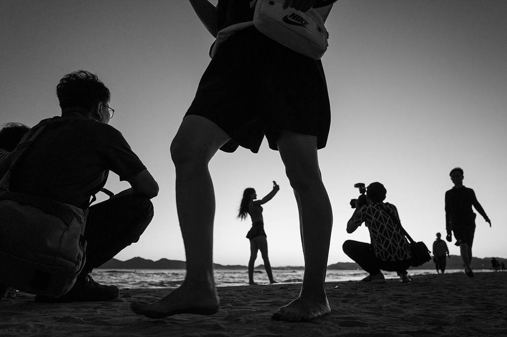
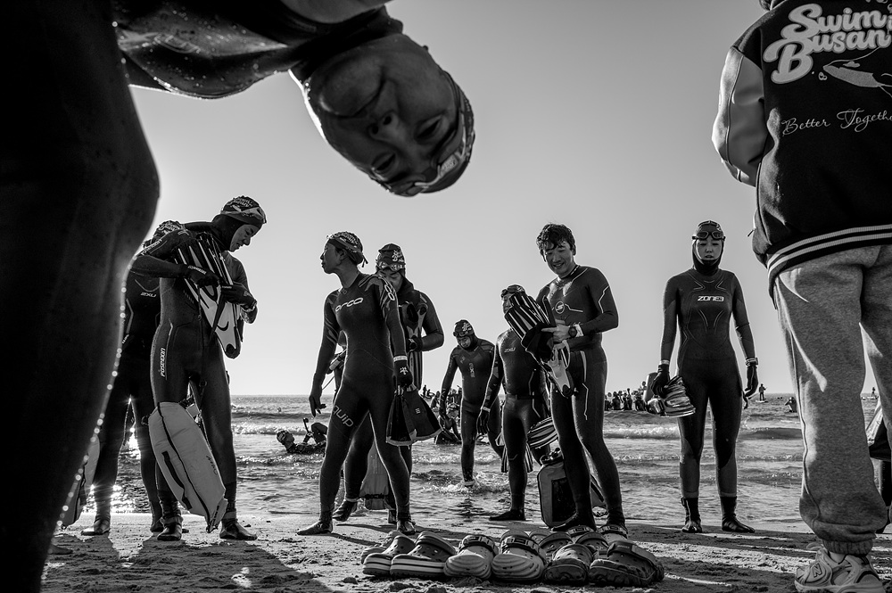

"바다는 늘 사람을 드러나게 합니다. 부산의 바다를 바라보며 작가는 '의미와 감각 사이에서 해소된다'고 말합니다."
《해소의 바다, 부산》 은 Street Photography Club (이하 SPC) 이 시작하는 사진첩 시리즈의 첫 권입니다. 도시의 경계 위에서 마주한 사람들의 표정과 감정 — 그 순간을 기록한 김지훈 작가의 36 장이 한 권으로 묶였습니다.
한 장 한 장, 바다 자체보다 그 앞을 지나는 공기와 시선 이 먼저 느껴지는 사진들. 복잡한 마음이 차분히 가라앉는 — 작가가 말하는 '해소의 순간' 을 천천히 따라가게 됩니다.
바다 앞에서 풀려나는 표정들
책을 펼치면 처음 마주하는 건 도시 한복판의 검은 연기 기둥과, 그 너머를 바라보는 한 사람의 뒷모습입니다. 사고도 사건도 아닌, 이 도시에서 일어난 그저 한 장면. 작가는 그 시선을 그대로 따라가며 — 부산이라는 도시의 안과 밖 사이를 천천히 오갑니다.
바다 앞에 서면 사람들의 자세는 달라집니다. 뒷짐을 지거나, 후드를 뒤집어쓰거나, 신발을 벗고 난간에 발을 올리거나. 작가의 카메라는 그 풀려나는 자세 — 도시 안에서는 좀처럼 보기 어려운 무방비한 순간들 — 을 가만히 들여다봅니다.
사진은 모두 흑백으로 인쇄됩니다. 컬러가 빠진 자리에는 공기와 빛의 결 이 남고, 인물의 시선이 더 또렷이 떠오릅니다. 부산의 풍경을 그리려 하기보다 — 그 풍경 앞에서 사람의 마음이 어떻게 풀어지는지를 기록하려는 책입니다.


Street Photography Club 의 첫 사진첩
우리는 거리의 순간을 기록하고자 하는 모든 이들을 위한 컬쳐 플랫폼입니다. 도시든 시골이든, 골목이든 광장이든, 우리가 서 있는 그곳이 곧 하나의 프레임입니다. 찰나를 관찰하고, 일상의 진면을 기록하며, 사람의 시선을 나눕니다.
SPC 는 거리 사진가들의 시선을 한 자리에 모으는 작은 컬처 플랫폼입니다. 이번 《해소의 바다, 부산》 은 그 첫 번째 결과물 — SPC 사진첩 ISSUE.01 로 묶인 한 권입니다. 다음 호는 비오톱 서울 이라는 이름으로 이미 작업 중. 한 도시 한 호씩, 작가 한 명의 시선을 천천히 묶어가는 시리즈입니다.
책 정보
- 제목 해소의 바다, 부산 (Busan: A Sea of Relief)
- 작가 김지훈
- 발행 4rest
- 판형 A5 (변형) / 36P
- 가격 15,000 원
- ISBN 979-11-992035-25